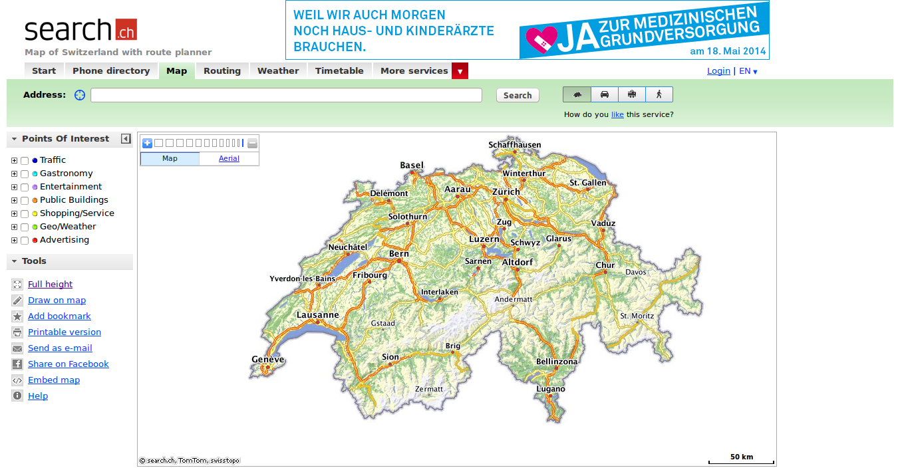

Vector tiles
Waarom, wat, hoe?
Edward Mac Gillavry
Edward Mac Gillavry
- Webmapper
- HAS Den Bosch, Geo Academie
- Voorheen: Multimap, Zorgatlas, TomTom
Webmapper
- What the map can be
- Baukje, Niene, Edward, en Hans
- Gevestigd in Utrecht
- Geografische web-applicaties
- Web cartografie
- Open source, open data en open standaarden
Vector tiles!
- Waarom?
- Wat?
- Hoe maak je de tiles?
- Hoe bekijk je de tiles?
Kadaster/PDOK
Kadaster/PDOK
Datalab Amsterdam
Waarom?
Beetje geschiedenis
Digitale kaartdata
GIS software
1996 Mapquest lanceert publieke kaarten-website
Heel traag...
Maar vergelijkbaar met WMS-specificatie!
GIS op het Web is niet gebruiksvriendelijk
Zwitsere precisie!
2004 Endoxon bedacht een slimme manier: map.search.ch
2005 Google Maps kocht Endoxon
De oplossing?
Raster tiles!
google.com/maps
openstreetmap.org
Tiles
Alle tiles zijn 256x256 pixels...
Zelfde grid, zelfde projectie
Al deze kleine tegels laden sneller dan een grote kaart.
Naadloos en snel
We noemen deze kaarten slippy maps
Vergelijkbaar met TMS van OSGeo
Vergelijkbaar met WMTS REST van OGC
Zoomniveaus
Ieder zoomniveau heeft een nieuwe set tegels
Zoomniveau 0: 1 tile, hele wereld
Groeit kwadratisch...
Zoom level 1: 4 tiles
Zoom level 2: 16 tiles
etc.
 Kaart met tegelgrenzen
Kaart met tegelgrenzen
Publiceren van tiles
Van tevoren maken
Opslaan in een cache.
Afbeeldingen op het Web.
http://tile.openstreetmap.org/5/16/10.png http://tile.openstreetmap.org/17/67320/43073.png{kind=link}
{kind=link}
{z/x/y}
Nadelen
Interactie met objecten
Informatie van objecten
Opslag: meerdere visualisaties
Transport: raster v. vector
Cartogram
Wat zijn vector tiles??
Alternatieven
Web Feature Service (OGC)
GeoJSON
TopoJSON
No colours
Arrays in a 256 x 256 matrix
Zelfde tiling schema als raster tiles
Binair format
Vereenvoudiging geometrie
Standaarden
Mapbox Vector Tile (MVT) standaard.Gebaseerd op binaire protocal buffer (.pbf) van Google.
Hoe kom ik eraan?
OpenStreetMap
Mapzen, Mapbox, MapQuest
Esri ArcGIS